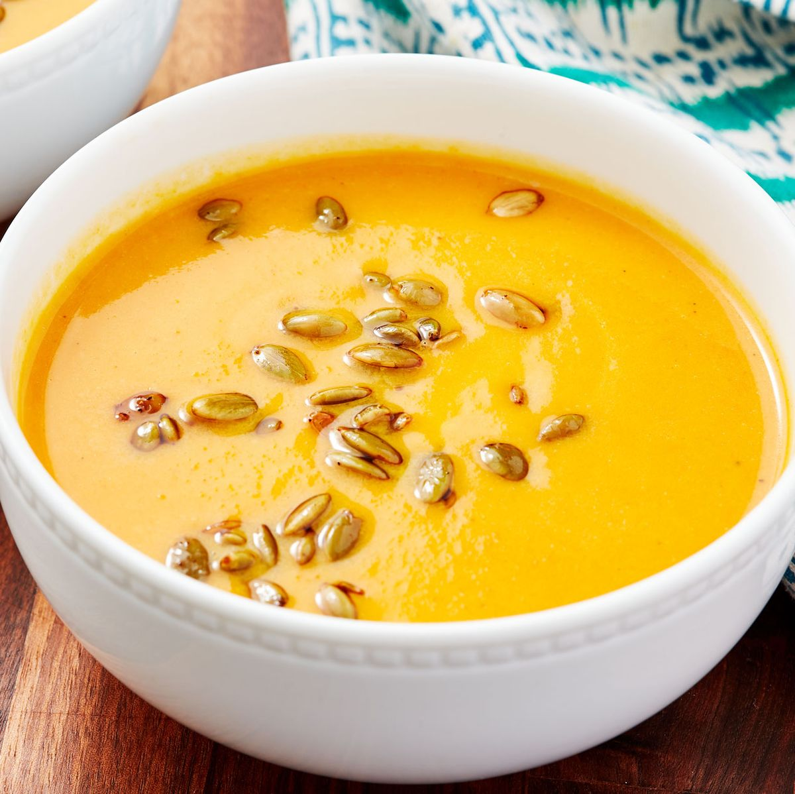

Stuffed Pepper Soup
This soup has everything you like about a classic stuffed pepper—ground beef,
rice, tomatoes, and CHEESE. Something about sprinkling some cheese (especially if it's white cheddar) over a hot cup of soup, almost brings a tear to your eye! But don't forget this soup is filled with sweet bell peppers,
tender beef and hearty rice. It's perfect on its own or served with cornbread or a salad. Switch things up by swapping the rice with a small pasta or other grains like quinoa or farro or use ground chicken or sausage in place of ground beef.
How long does this soup last in the fridge?
Stuffed pepper soup will last for no more than 3 to 4 days in the fridge.
Make sure to seal tightly in a container if there are leftovers or you’re meal prepping.
The soup will last up to a month in the freezer. Let the soup thaw in the fridge before slowly reheating.
Other types of stuffed pepper soups
Start by thinking about your favorite type of stuffed pepper.
Do you like yours with ground turkey or ground pork? What about using tomato paste for a richer flavor? Tomatillo sauce could replace tomato sauce. White beans, black beans, or navy beans might be the starchy addition if you prefer over rice or pasta. If you’re vegan or vegetarian soup can be full of zucchini, mushrooms, kale, or other favorite vegetables. Here are some other stuffed pepper recipes for soup inspiration: cheesesteak stuffed peppers, spinach artichoke stuffed peppers, or chicken alfredo stuffed peppers.
What can this soup be served alongside?
As with any soup buttered crusty bread is a great side addition. Something a little more complex might contain beans like in our three bean salad, fresh mozzarella and cured meat assembled in the antipasto salad, or one of our favorites a classic stromboli. Otherwise think about some of your favorite sides to soup or stews and take it from there.
Do I have to add the rice to make it stuffed pepper soup?
If you want a lower carb version of the soup you can limit the amount of rice or omit it all together
. The soup will still taste great and may be a little more “soupy” without the extra starch.
Have you tried this yet? Let us know how it went in the comments below!
Editor's Note: The introduction to this recipe was updated on September 6,
2022 to include more information about the dish.

Panera Autumn Squash Soup
Panera has a cult following around their soups and especially their autumn squash soup.
Our copycat version has butternut squash, pumpkin, carrots, and shallots for a sweet and fully fall flavor.
Topped with spiced pepitas this soup is great as an appetizer or filling enough to be the main course.

Nabeyaki Udon
I’m a sucker for dishes high in flavor, low in commitment. And if it comes together in one pot? All in! Nabeyaki udon is a one-pot Japanese noodle soup that is just this.
It starts with dashi, a quick stock that is at the heart of many Japanese soups (hello, miso!) – it’s briny and full of umami.
I use kombu (dried kelp) and bonito (dried fish) flakes in this recipe, but dried shiitake mushrooms steeped in water overnight is vegan and delicious. Not at all traditional, but I’ve used boxed low-sodium chicken stock and didn’t feel like a cheat. Then goes in a simple seasoning of soy sauce and mirin, a sweet Japanese rice wine.
A decent sub for 1 tablespoon mirin: 1 tablespoon rice wine vinegar or distilled white vinegar plus 1/4 teaspoon sugar.
To the simmering dashi, add a protein (chicken, beef, tofu) and hearty veg like squash, carrots, turnips, and mushrooms.
Dig out whatever produce is hiding in the crisper. Cut everything into uniform bite-sized pieces so that they cook evenly in a flash. Then add quick-cooking greens like snap peas, spinach, collard greens, kales, or arugula. I go out of the way to find kamaboko, Japanese fish cakes. It doesn’t have a strong flavor, but it’s pink and oh so winsome.
Finally slide in the cooked udon noodles, a thick, round, and somewhat chewy wheat noodle. Any kind of udon, fresh, frozen, or dried, works. That’s it!
The name nabeyaki refers to a nabe or pot – this noodle soup is typically cooked and served in a donabe, or clay pot.
No nabe? No problem. Use a Dutch oven since it retains heat well, allowing everything to cook quickly and evenly. Plus, it looks nice enough to set right on the dining table. My gang of five gathers around the pot, dividing the noodles into our bowls and ladling the hot soup on top – some of us request more noodles less soup.
I like the most veg and a sprinkle of shichimi togarashi, a bright, tangy, and spicy Japanese spice blend. Either way, we all leave the table nourished and happy.
Use up more of the kombu by making your own sushi rice!
Have you made this yet? Let us know how it went in the comments below!